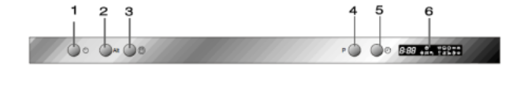

Инструкции за работа
Control Panel

Важно!
За да постигнете най-добри резултати, прочетете внимателно инструкциите
за работа преди първоначалната употреба на уреда.
1. Бутон за включване/изключване: За включване и изключване на уреда.
2. Бутон Alt: тази функция се използва за избор на горната или долната кошница.
След натискането на този бутон съответния индикатор ще светне.
3. Бутон за допълнително сушене. Тази функция може да се използва за следните програми:
Интензивна, Нормална, ECO, Програма за стъклени чаши и съдове и Едночасова програма.
4. Бутон за избор на програма: изберете една от осемте програми на съдомиялната.
5. Бутон за отложен старт: чрез този бутон може да настроите старта на програмата за определен час.
6. Информационен дисплей: показва възникнали грешки и отложеното време до старта на програмата.